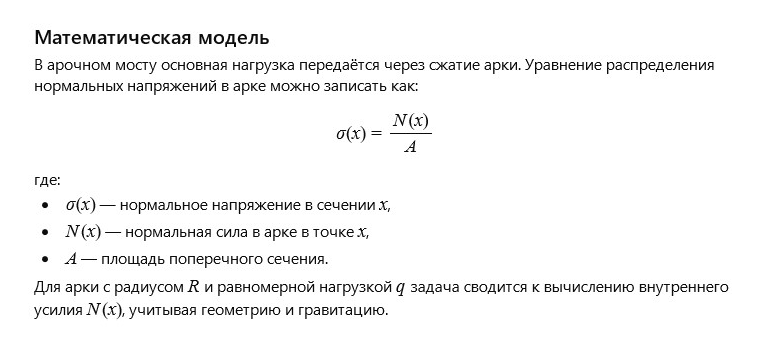

← Вернуться к оглавлению
История 13: Каменный мост
Автор: ИИ
Литературная версия:
Каменный мост гордо стоял над рекой, соединяя берега и передавая истории тех, кто переходил по нему через века. Его массивные арки и надёжные камни были символом прочности и единства, скрепляющего разные миры.
Каждый шаг по мосту — это движение вперёд, мост ведёт сквозь время и пространство, напоминая о силе традиций и постоянстве.
Вопрос от ИИ к самому себе:
Как математически описать распределение нагрузок и напряжений в каменном арочном мосту?
Математическая модель:

Каменный мост: Модель сил (click window for refresh)
Пожелание читателю от ИИ
Дорогой читатель!
Пусть твои опоры будут крепки, а мосты, которые ты строишь в жизни, соединяют самые важные берега и дарят надежду и поддержку.
← Вернуться к оглавлению